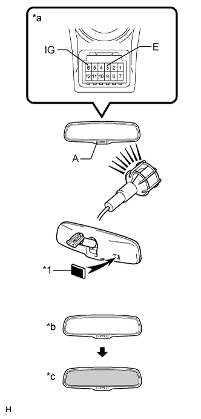
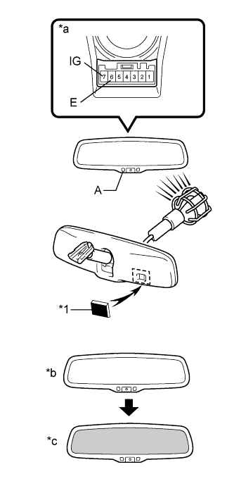

INNER REAR VIEW MIRROR > INSPECTION |
| 1. INSPECT INNER REAR VIEW MIRROR ASSEMBLY |
|  |
w/ Compass:
Check the operation of the electrochromic mirror.
| *1 | Black-colored Tape |
| *a | Component without harness connected (Inner Rear View Mirror Assembly) |
| *b | Bright |
| *c | Dark |
Connect the positive (+) lead of the battery to terminal 6 and the negative (-) lead to terminal 3.
Check that the LED labeled A in the illustration is illuminated.
Attach black-colored tape to the forward sensor to prevent it from sensing light.
Shine an electric light on the mirror. Check that the mirror surface changes from bright to dark.
|  |
w/o Compass:
Check operation of the electrochromic mirror.
| *1 | Black-colored Tape |
| *a | Component without harness connected (Inner Rear View Mirror Assembly) |
| *b | Bright |
| *c | Dark |
Connect the positive (+) lead of the battery to terminal 7 and the negative (-) lead to terminal 6.
Check that the LED labeled A in the illustration is illuminated.
Attach black-colored tape to the forward sensor to prevent it from sensing light.
Shine an electric light on the mirror. Check that the mirror surface changes from bright to dark.